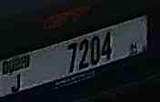
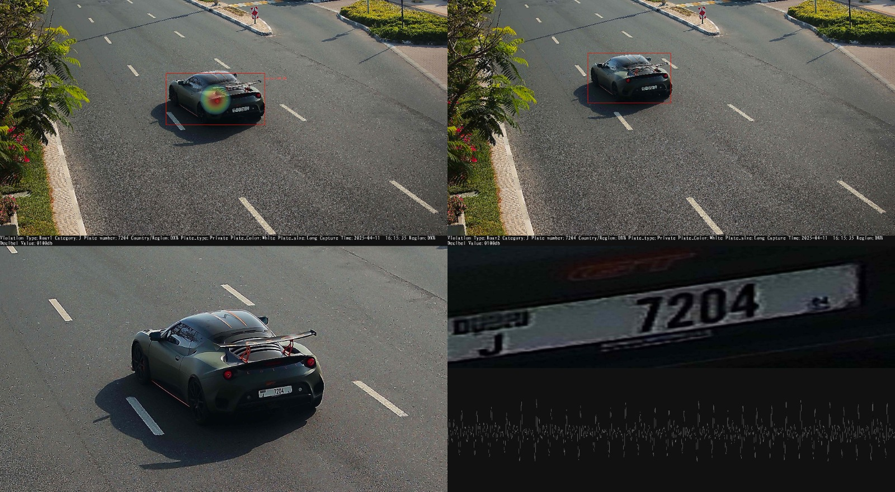
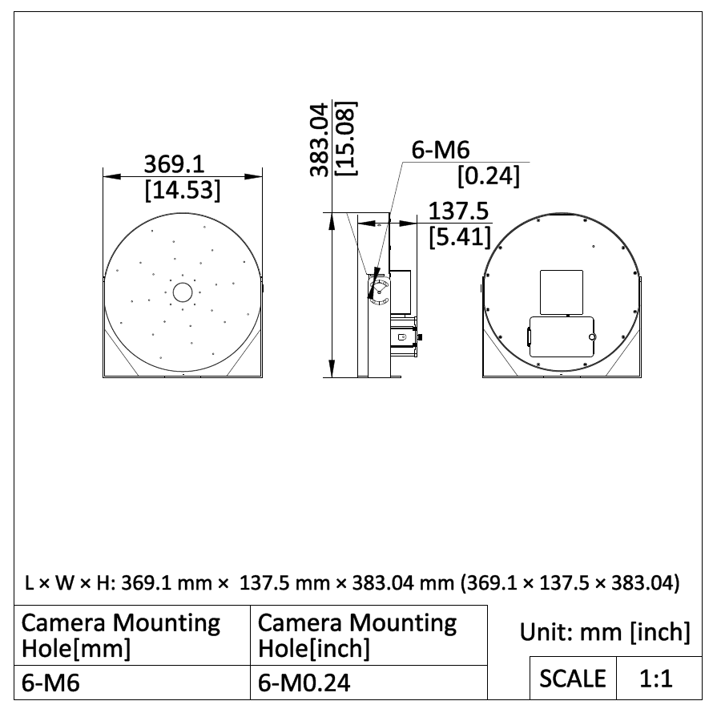

Cámara Inteligente de Detección Acústica y Captura Vehicular
Sistema inteligente de monitoreo y fiscalización de tránsito, orientado a la detección de eventos acústicos vehiculares —bocinas y ruido de motor / escape—, la identificación del vehículo asociado y la generación de evidencia audiovisual en tiempo real.
* Este análisis y esta presentación pueden adaptarse a los requerimientos específicos de cada cliente.
El ruido vehicular es difícil de fiscalizar
El uso indebido de bocinas es una de las principales fuentes de contaminación acústica urbana, pero su fiscalización manual depende de la presencia física de un inspector en el momento exacto del evento.
- Los eventos de bocina son instantáneos y no dejan evidencia física posterior.
- La fiscalización tradicional requiere personal en terreno, en el momento preciso del hecho.
- Es difícil asociar de forma objetiva un sonido con el vehículo específico que lo originó, especialmente en vías de varios carriles.
- Sin evidencia audiovisual y de metadata, la gestión municipal carece de datos objetivos para tomar decisiones.
Marco normativo
Regulación vigente sobre ruido vehicular en Chile, como contexto para dimensionar dónde aporta la solución hoy y dónde queda pendiente de evolución normativa.
El Ministerio del Medio Ambiente informó el 12 de agosto de 2026 que revisa el DS N.º 7 para incorporar mecanismos que permitan controlar el ruido de motocicletas en circulación — ámbito que hoy no está cubierto por la normativa vigente.
Oportunidad municipal y niveles de implementación
Una municipalidad podría estudiar una ordenanza o programa comunal destinado a prevenir y controlar ruidos molestos asociados al tránsito vehicular, siempre dentro de sus competencias y sin reemplazar la normativa nacional de tránsito o de emisiones. Existen antecedentes de ordenanzas municipales chilenas que han regulado ruidos vehiculares, incluyendo escapes libres y uso de bocinas.
La definición de infracciones, límites de dB(A), procedimientos de medición y sanciones debe ser revisada por la Dirección Jurídica municipal y los organismos competentes.
Confirmado por el fabricante (Whistle Detection + LPR) y observado directamente en la demostración para ambos tipos de evento: bocina y ruido de motor/escape.
La detección ya fue demostrada; el piloto valida su consistencia en condiciones reales (tránsito, clima, distintos vehículos) y precisa el detalle fino de clasificación.
Requiere validación metrológica, procedimiento normativo y análisis jurídico. No disponible hoy.
No se afirma que la cámara Hikvision sea actualmente un instrumento certificado para fiscalización de dB(A). La detección y localización de ruido de motor/escape sí fue observada directamente en la demostración; lo no confirmado es si el equipo distingue la causa exacta (p. ej. un escape específicamente modificado) dentro de ese tipo de evento.
Detección acústica asociada automáticamente al vehículo
La cámara combina un sensor de imagen de alta resolución con un módulo de análisis acústico: cuando detecta un evento acústico —bocina o ruido de motor / escape—, calcula su origen dentro de la escena y lo asocia visualmente al vehículo correspondiente, generando evidencia en video, imagen y metadata.
Localización acústica del evento
El sistema representa el origen calculado del sonido como una nube de color superpuesta sobre la escena ("Whistle Cloud", nube acústica). Esta imagen corresponde a un recorte real de la evidencia generada durante la demostración.
- Detección de bocinas (whistle detection) mediante análisis acústico.
- Posicionamiento del vehículo que genera el evento en la vía.
- Visualización de coordenadas del evento detectado.
- Monitoreo simultáneo de hasta 3 pistas de tránsito.
La evidencia generada en este caso clasifica el evento como "Roar" (no como "Whistle"), lo que en este contexto corresponde a ruido de motor o de escape —incluyendo posibles bramadores o modificaciones al sistema de recirculación de gases (EGR)— que hace que el vehículo emita ruido por sobre lo permitido. Es decir, el mismo mecanismo de nube acústica se usa aquí para localizar un evento de ruido de motor/escape, no una bocina.
DEMOSTRACIÓN DEL SISTEMA
Momentos clave
Qué observar
Seleccione un marcador o reproduzca el video para comenzar.
Asociación del evento con el vehículo
Una vez calculada la localización acústica, el sistema mantiene identificado al vehículo mediante un recuadro de seguimiento (bounding box, recuadro delimitador), incluso en cuadros posteriores donde ya no se muestra la nube acústica.
- La evidencia generada incluye dos cuadros del mismo evento, etiquetados internamente como Roar1 y Roar2 (evento tipo "Roar" — ruido de motor / escape; cuadro 1 y cuadro 2 de la misma captura).
- En ambos cuadros el vehículo aparece enmarcado con un recuadro rojo (bounding box).
- El número de patente y demás metadata se mantienen asociados al mismo vehículo en ambos cuadros.
Reconocimiento automático de patente
El sistema recorta y amplía automáticamente la zona de la patente del vehículo asociado al evento, generando una imagen independiente de alta legibilidad.

Reconocimiento automático de placas patente (LPR — Reconocimiento Automático de Patentes), según Ficha Técnica del fabricante.
| Número de patente leído | 7204 |
| Categoría | J |
| Tipo de patente | Private (particular) |
| Color de patente | White (blanca) |
| Tamaño de patente | Long (formato largo) |
Evidencia generada
Composición real de evidencia generada por el sistema para este evento: cuadros de detección, recorte del vehículo, recorte de patente, forma de onda del sonido y metadata asociada.

| Violation Type (tipo de infracción) | Roar1 / Roar2 (ruido de motor/escape, cuadros 1 y 2) |
| Category (categoría) | J |
| Plate number (número de patente) | 7204 |
| Country / Region (país / región) | DXN |
| Plate type (tipo de patente) | Private (particular) |
| Plate color (color de patente) | White (blanca) |
| Plate size (tamaño de patente) | Long (formato largo) |
| Capture time (hora de captura) | 2025-04-11 16:15:35 |
| Decibel value (valor de decibeles mostrado) | 0100db |
Arquitectura del sistema
Según la Ficha Técnica del fabricante, el equipo integra en un mismo cuerpo la captura de imagen, el análisis acústico y la analítica vehicular.
Características técnicas
Dimensiones, protección y prestaciones de video según la Ficha Técnica del fabricante (modelo iDS-TCI903-FIV).

Integración y comunicación
El equipo está pensado para integrarse con plataformas de video (VMS — Video Management System, sistema de gestión de video) y sistemas de gestión de tránsito de terceros.
Capacidades confirmadas
Funcionalidades documentadas en la Ficha Técnica del fabricante y/o observadas directamente en la demostración en video.
La demostración en video muestra, cuadro a cuadro, al sistema detectando y localizando un evento acústico de ruido de motor / escape (clasificado internamente como "Roar", distinto de "Whistle"/bocina), asociándolo correctamente al vehículo en la vía. Es decir: el sistema detecta este tipo de evento, no solo bocinas. Lo que queda pendiente de documentación es el detalle fino de esa clasificación (criterios exactos, subtipos).
Prueba piloto
Parámetros de referencia documentados por el fabricante para la instalación, y una propuesta general de piloto para validar el sistema en condiciones reales.
- Altura de poste de referencia: 6 m
- Rango de detección: 10 m a 50 m desde el poste
- Monitoreo de hasta 3 carriles por equipo
- Selección de un punto de instalación representativo (corredor con tránsito mixto)
- Instalación conforme a los parámetros de referencia del fabricante
- Período de observación acordado con el cliente
- Contraste de eventos detectados contra observación manual en sitio
- Revisión específica de clasificación detallada, medición certificada dB(A), umbral normativo e integración de API
Conclusión
La cámara iDS-TCI903-FIV combina captura de video de alta resolución, detección acústica y reconocimiento de patente en un solo equipo, generando evidencia objetiva para la gestión y fiscalización del ruido vehicular.
- Detección y localización de eventos acústicos vehiculares —bocina y ruido de motor/escape ("Roar")—, con asociación automática al vehículo.
- Generación de evidencia (video, imagen, metadata) lista para revisión posterior.
- Integración estándar (ONVIF — interoperabilidad; ISAPI — API propietaria; SDK — kit de desarrollo) con plataformas de gestión existentes.
- Aspectos de clasificación avanzada y medición normativa certificada quedan pendientes de validación.
- Este análisis puede adaptarse a los requerimientos específicos del cliente: sitio de instalación, tipo de evento a priorizar (bocina, motor, escape) e integraciones.